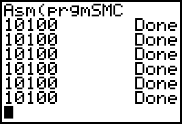

LD HL, (counter)
LD DE, 100
ADD HL, DE
LD (counter), HL
b_call(_DispHL)
RET
counter:
.DW 10000

That's a problem. The reason is that the TI-OS copies the program to $9D95 to run it, but the lazy $@%!* forgets to copy it back. The program is effectively write-protected. To make SMC changes permanent, you have to copy the original program data yourself.The only hard part is finding your program so you can copy the data back. Yeah, you use ChkFindSym, but how do you know what to put in OP1? If you stuck the program's name in itself somewhere it would work, but that whole theory breaks down if you use a utility to rename the program. Fortunately, the program's name is located in OP1 once the program starts, so you can back it up to a safe place if you intend to make use of it.
b_call(_PushRealO1) ;Save OP1 before we blow it away somehow
LD HL, (counter)
LD DE, 100
ADD HL, DE
LD (counter), HL
b_call(_DispHL)
b_call(_PopRealO1) ;Retrieve OP1 for writeback
b_call(_ChkFindSym)
;Find data location as offset from start of program.
LD HL, DataStart - $9D95 + 4 ;Have to add 4 because of tAsmCmp token
;(2 bytes) and for size bytes (2 bytes)
ADD HL, DE ;HL now points to data location in original program.
EX DE, HL ;Write back.
LD HL, DataStart
LD BC, DataEnd - DataStart
LDIR
RET
DataStart:
counter: .DW 10000
DataEnd:
Naturally, you can make TI-BASIC programs or assembly programs.
:{X, 0}->LTEMP1
:{0, X}->LTEMP2
:LinReg(a+bx) LTEMP1, LTEMP2, Y1
:Equ>String(Y1, Str1)
:sub(Str1, 1, length(Str1)-4)->Str1
:DelVar LTEMP1
:DelVar LTEMP2
:DelVar Y1
An assembly program to create this program:
LD HL, prog_name
b_call(_Mov9ToOP1)
b_call(_ChkFindSym)
JR C, IsOkay
b_call(_DelVarArc)
IsOkay:
LD HL, prog_data_end - prog_data
b_call(_CreateProg)
INC DE
INC DE
LD HL, prog_data
LD BC, prog_data_end - prog_data
LDIR
RET
prog_name:
.DB ProgObj, "TOSTRING"
prog_data:
#define tok2(token) t2ByteToken, token
.DB tLBrace, tX, tComma, t0, tRBrace, tStore, tListName, "TEMP1", tEnter
.DB tLBrace, t0, tComma, tX, tRBrace, tStore, tListName, "TEMP2", tEnter
.DB tLR, tListName, "TEMP1", tComma, tListName, "TEMP2", tComma, tVarEqu, tY1, tEnter
.DB tok2(tEquToStrng), tVarEqu, tY1, tComma, tVarStrng, tStr1, tRParen, tEnter
.DB tok2(tSubStrng), tVarStrng, tStr1, tComma, t1, tComma, tok2(tLength)
.DB tVarStrng, tStr1, tRParen, tSub, t4, tRParen, tStore, tVarStrng, tStr1, tEnter
.DB tok2(tDelVar), tListName, "TEMP1", tEnter
.DB tok2(tDelVar), tListName, "TEMP2", tEnter
.DB tok2(tDelVar), tVarEqu, tY1
prog_data_end:
LD HL, prog_name
b_call(_Mov9ToOP1)
b_call(_ChkFindSym)
JR C, IsOkay
b_call(_DelVarArc)
IsOkay:
LD HL, prog_data_end - prog_data
b_call(_CreateProg)
INC DE
INC DE
LD HL, prog_data
LD BC, prog_data_end - prog_data_start
LDIR
RET
prog_name:
.DB ProgObj, "HELLO", 0
prog_data:
.DB t2ByteTok, tAsmCmp
prog_data_start:
b_call(_ClrLCDFull)
LD HL, 0
LD (CurRow), HL
LD HL, msg - prog_data_start + $9D95
b_call(_PutS)
RET
msg:
.DB "Hello World!", 0
prog_data_end:
| _StoSysTok | Stores the FP number in OP1 to a system variable. | |
|---|---|---|
| INPUT | A
| System variable token. |
|
| OP1 | Real number to store. | |
LD HL, FP_Negative10
b_call(_Mov9ToOP1)
LD A, XMINt
b_call(_StoSysTok)
LD A, YMINt
b_call(_StoSysTok)
LD HL, FP_Positive10
b_call(_Mov9ToOP1)
LD A, XMAXt
b_call(_StoSysTok)
LD A, YMAXt
b_call(_StoSysTok)
LD HL, FP_1
LD DE, XScl ; Address of XScl variable
CALL Store9Bytes
LD DE, YScl ; Address of YScl variable
CALL Store9Bytes
LD DE, XResO ; Address of XRes variable
Store9Bytes:
LDI
LDI
LDI
LDI
LDI
LDI
LDI
LDI
LDI
LD HL, FP_1
RET
FP_Negative10:
.DB $80, $81, $10, $00, $00, $00, $00, $00, $00
FP_Positive10:
.DB $00, $81, $10, $00, $00, $00, $00, $00, $00
FP_1:
.DB $00, $80, $10, $00, $00, $00, $00, $00, $00